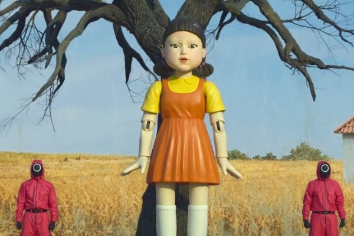
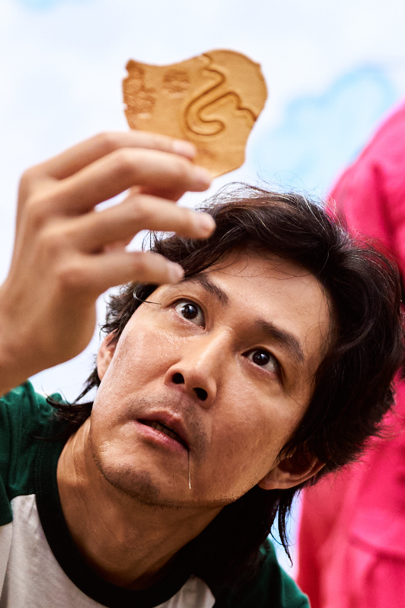
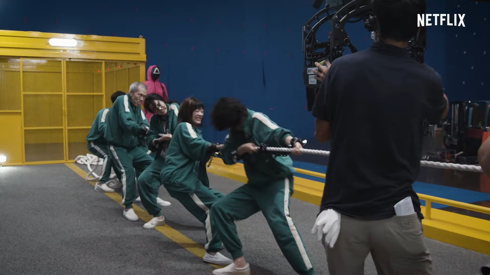
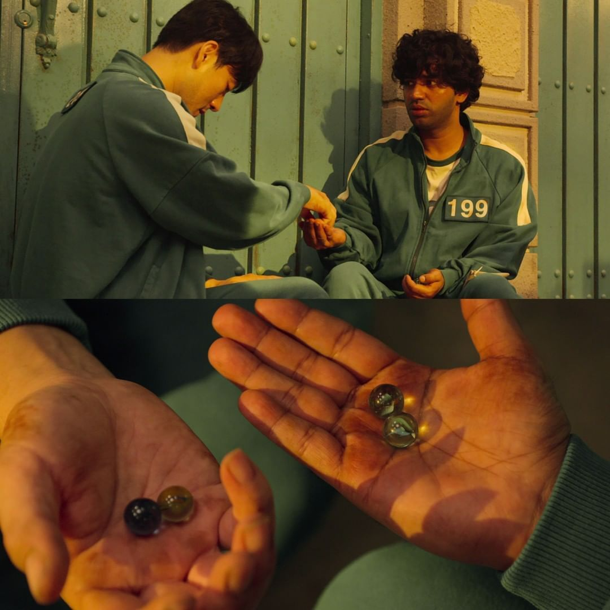
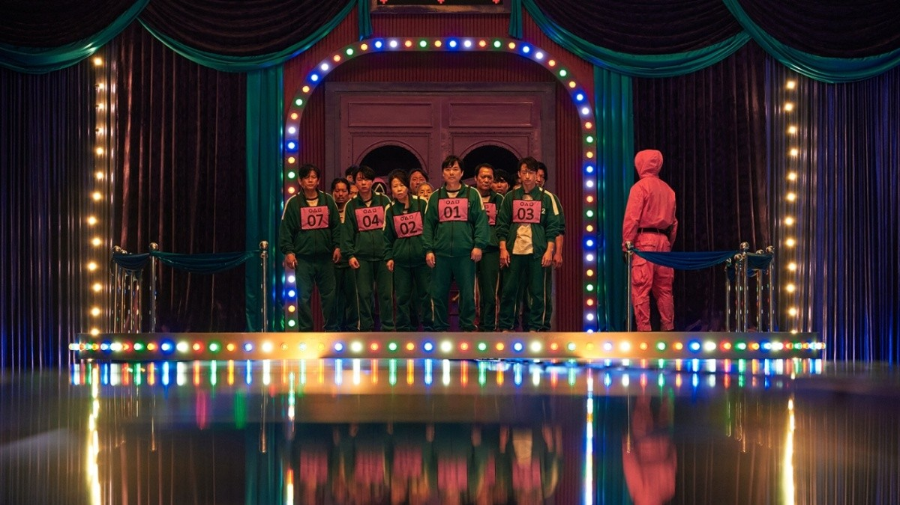
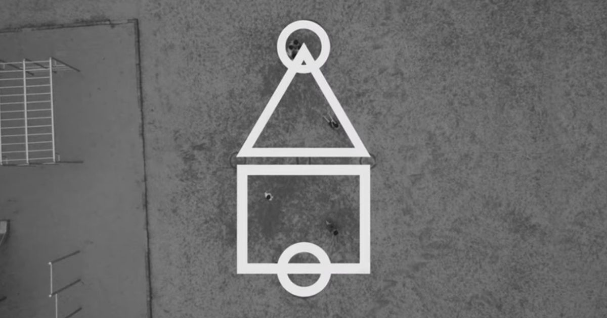

Un , deux , trois Soleil
Le concept est le même que dans les cours d’école, un joueur se place face au mur, dans la série c’est une poupée géante, et crie "un, deux, trois", et à "soleil" il se retourne. Si un joueur bouge au moment où le meneur de jeu se retourne, il doit retourner au point de départ, sauf que dans cette version, il est tué. Les vainqueurs sont ceux qui parviennent à franchir la ligne sans avoir éveillé les soupçons de cette poupée.

La Dalgona
Cette sucrerie fait le bonheur des enfants coréens. Le principe est simple, un motif est dessiné dans ce gâteau en pâte à sucre et les joueurs doivent découper leur motif sans le casser sous peine d’être éliminés. Toutes les techniques sont acceptées tant que le motif reste intact.

Le tir à la corde
Comme dans le jeu pour enfants, deux équipes se font face à chaque extrémité de la corde. L’une d’elle remporte l’épreuve si elle parvient à faire franchir la ligne à l’autre équipe ou si les adversaires chutent. Dans la série, les deux équipes sont séparés par le vide, et vont tout faire pour ne pas tomber.

Le jeu de billes
Ici, des duos sont formés où chacun doit remporter l’ensemble des billes de son adversaire pour s’imposer et accéder à l’étape suivante.

Le "saut sur glace"
On y retrouve quelques similitudes avec la marelle puisque les joueurs doivent accéder au ciel, dans la série à l’autre bout de la passerelle, sans tomber dans le vide. La difficulté dans la série coréenne réside dans le fait que les joueurs évoluent sur des plaques en verre, et donc fragiles.

L'épreuve du "Squid Game"
L’épreuve finale est le jeu du calamar, qui a donné son nom à la série "Squid game" : "des formes géométrique représentant la forme d’un calamar sont dessinées sur le sol (carré, triangle, cercle), la partie s’achève quand l’un des attaquants pénètre dans la zone circulaire. Les défenseurs ont pour mission de faire sortir leurs adversaires de la zone de jeu".
